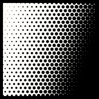
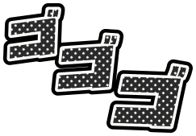

Screentone
A black-and-white manga page with one spot colour. White ink on beta black, panels with gutters, screentone, speed lines, and a crimson-pink for what is chosen. Toasts are speech bubbles; she has a mouth on her.

PaletteBeta black and white ink carry almost everything, with screentone in between. The one spot colour is a hot crimson-pink, kept for primary actions, the current page and tab, ratings, the favourite and how far into a scene you got. Bubbles and narration boxes are paper white. Contrast on the panel (#0A0A0A): text 17.7:1, muted 9.8:1, dim 6.3:1; the red on black 6.5:1 as text, white on the red 4.5:1.

TypeThree SIL OFL faces. Dela Gothic One, a heavy gothic with Latin and Japanese, letters the brand, section titles and every SFX; its Japanese ships as a 2 KB subset holding only the kana and kanji the SFX use. Caveat Brush, a condensed brush hand slanted and set in caps, letters the bubbles the way translated manga is hand-lettered. Zen Kaku Gothic New carries labels, card titles and body text. The silence (……) is drawn as dots, centred the way Japanese sets it, so no font ships for two characters.
| ドキッ | doki' | a jolt of the heart; the favourite, on hover, click and keyboard focus |
| ドキドキ | doki-doki | a pounding heart; audio-only covers on this page |
| キラキラ | kira-kira | sparkle; the motifs on this page |
| ゴゴゴ | go-go-go | menacing aura; modal titles, the loader |
| ドン | don | dramatic impact; her entrance on the performer page |
| ジー | jii | staring; scene cards on hover; her stare in the hero |
| ニヤ | niya | a smirk; performer cards on hover; the hero |
| チュッ | chu' | a kiss; image cards, on hover |
| フン | fun | hmph; over every toast |
| ぷい | pui | turning away in a huff; the empty-state panel |
| …… | (silence) | nothing to say; every empty state |
| 漫画 | manga | manga; the imprint label on the brand |
| baka | baka | dummy, idiot (a tsundere's word, in romaji as translated manga print it); her one line for Scene already tagged |
Motifs and glyphs
Everything is drawn, not rendered: CSS gradients for screentone, hatching, speed and focus lines, and SVG for the bubbles, stars, sweat drop and lettering, set from the Dela Gothic One and Caveat Brush outlines so they need no web font. The two figures are the only renders, made locally with Qwen-Image 2512 (Apache 2.0): the stare and the glance in the hero, and the glance again in the empty-state panel, the one figure the plugin ships. SFW mode hides both. The flat glyphs below are CSS masks, so they take any fill.

hatching
ゴゴゴ go-go-goButtons
Buttons are inked boxes with a screentone shadow. Primary is the spot red, secondary is beta, Scan is paper, Generate is hatched and Identify is toned; Delete is outlined in red until you mean it. Hover lifts the box off its shadow, a press lands it, and the chosen item of a group turns paper white.
Tags, ratings and favourites
Tags are caption boxes with a scrap of tone in the corner. Ratings are inked stars in the spot colour, outlined in white, and each one catches a glint now and then. The favourite is a heart that pounds when you hover or tab to it, and ドキッ (a jolt of the heart) pops beside it on hover, on click and on keyboard focus. The O counter is the anime sweat drop. Click them for sparkles, streaks and drops.

CardsCards are manga panels: the picture and the caption are two frames split by a black gutter. On hover the frame thickens and lines rush in over the picture for a beat, speed lines on scenes and focus lines on performers and images, with an SFX: ジー (staring), ニヤ (a smirk), チュッ (a kiss). The studio is a narration box, resolution and length a black caption, and the rating a red caption cut on the slant, to the right of the card's checkbox. Titles stop at two lines and the counts sit at the foot of each caption panel, so a row stays level whatever its titles.
Performer page
Her header is a manga spread. Her picture fills a panel cut on the slant, her name is lettered in the next panel across a leaning gutter, ドン (dramatic impact: her entrance) breaks the frame between them, and her details sit in a paper narration box in the corner of her panel. The picture panel crops any picture from the top, so faces stay in. When Stash's Enable background image setting is on, her blurred picture shows through the gutters, printed in grey under a tone. The cards below stay square.
Rei Kisaragi
Forms and menus
Inputs are ruled in white ink and focus throws a red offset. Menus are panels with the tone shadow; the tooltip is a small bubble and toasts are speech bubbles, with a huff (フン) over each. A modal is a panel ruled off by speed lines, with ゴゴゴ (menacing) brewing in the corner.
Stash-box
Tagger rows stay flat, since you clear hundreds of them: no tone, no lines, no motion. The chosen row gets a red edge and the chosen select a red offset. Verdicts use no green or yellow: a match is a white box with a black tick, a near miss an outlined box with a bang, a failure a red box with a cross, and in the scrape dialog the winning side's button turns paper.
-
Studio: Gutter PressGutter Press▾Performer: Mika AozoraSelect Performer▾Performer: Rei Kisaragi Matched: Rei Kisaragi
-
Spot Red
Inkwell · 2026-02-14
Navigation
The navbar is a beta title band ruled off like the top of a page, with 漫画 (manga) on a red imprint label by the brand. The current page is a red slug cut on the slant. On a phone held upright Stash docks the bar at the bottom, and the rules move to its top edge. The open tab is a white panel joined to the rule, and the pager is one ruled strip.
Loading and empty
The loader is focus lines spinning in held frames, like limited animation, with ゴゴゴ shaking beside them and her line in a bubble. Empty states fall silent: a panel of her looking back over her shoulder, a …… bubble and ぷい (turning away in a huff), then a line. In SFW mode the panel goes and the bubble stays.
Loading…
Copy
Her lines are a tsundere's, manga's own brat: huffy, teasing and secretly pleased, with one "baka" in the whole theme, as translated manga keep it. Matches are exact and whole-text, so titles, tags and descriptions are never touched. Plain labels and Stash's SFW mode turn them off.
| Stash says | Screentone says |
|---|